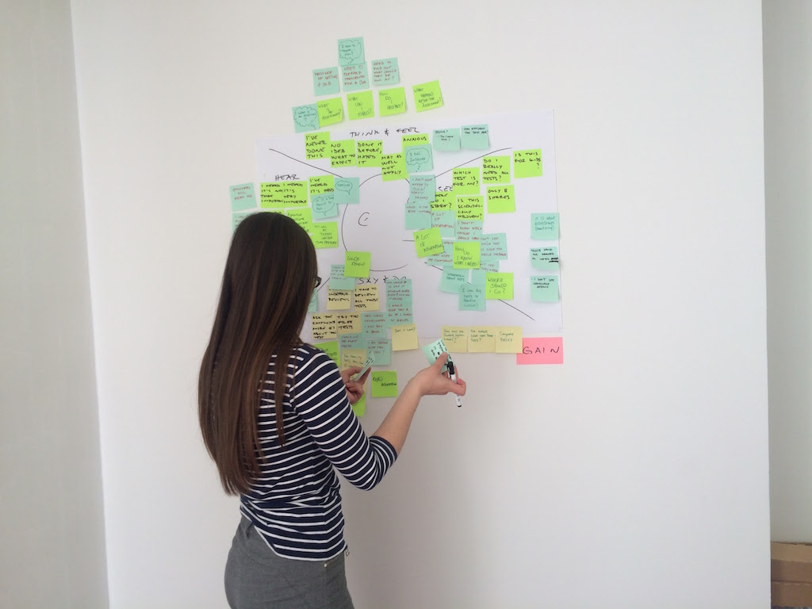
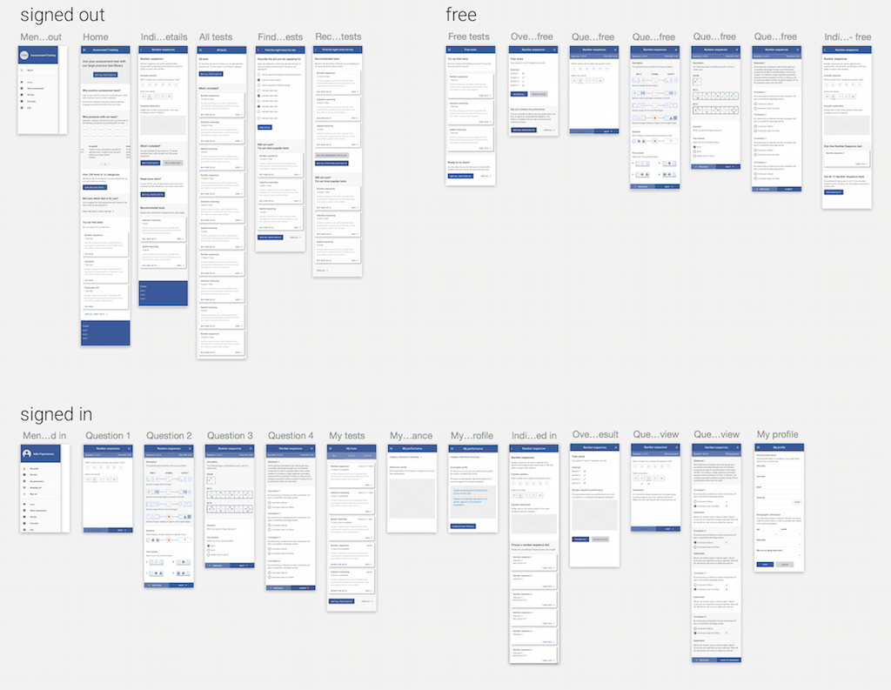

The challenge
Rubicon were embarking on a project with a Dutch client and wanted to try a different approach. To this point, they worked purely from client briefs, with little say in the design. They wanted to get the whole team, including the developers and the client, involved in the design process.
A lucky coincidence
It just happened that I had kickstarted the first UX meetup group in Sarajevo, and was delivering my talk on design sprints a month before Rubicon were to begin working with their client.
After the presentation, I was approached by Rubicon’s CEO, and we decided to try the design sprint process with their client.
One size does not fit all
In engagements like this, my first job as a designer is to figure out what the client actually needs. Just because the client says “we want to run a design sprint” doesn't mean they need a design sprint.
I had previously writen about how we customised the Google Design Sprint process at SEEK, in order to fit our needs.
After a conversation with the team at Rubicon, it was clear that the stage the client’s product was at did not require a full blown design sprint. What they needed was a targeted design workshop to help everyone understand the user base, the existing product, the challenges it was facing and to address those challenges. We all agreed that the best way to do this was through a set of collaborative design activities.
Workshop planning
I spent about half a day coming up with the workshop plan.
The fact that the client had an existing, validated product, justified the decision not to validate our design with users at this stage. Because the clients were coming to Sarajevo from The Netherlands, I knew I had limited time to work with, so I focused on group discovery and collaborative design, in order to make best use of everyone’s time.
Running the workshop
Day one
The first day of the workshop was spent on discovery activities including empathy mapping and product mapping. This allowed the whole team, from the product owners to the developers and testers, to gain a common understanding of the problem we were trying to solve.
Empathy mapping was particularly useful as it allowed the team to put themselves in the shoes of the end users. Later on, as we started getting into the design, we often reflected on what we discovered during empathy mapping.
Day two
Once we had a good understanding of the existing product and its audience, we spent the second day designing the product together. We used a couple of collaborative design techniques I wrote about before, as well as a sketching technique I had used a number of times.

The key here was that everyone was inloved in the design. This was something new for both Rubicon and their clients.
At the end of the day, there was a feeling that we came up with some great ideas, but most importantly, that we were all involved in the design and decision making proces.

Post-workshop wireframe design
With designs and user flows agreed upon, I took our sketches and started work on detailed wireframes. Designing in Sketch and prototyping with InVision, allowed me to turn around a full product low-fi prototype, and gather client feedback within three days.
The visual design for this product was handed over to a designer in The Netherlands and is not shown here.
The outcome
At the end of the workshop, Rubicon and their clients had a common understanding of the product they were building as well as the audience they were building it for.
The wireframes and the prototype I delivered allowed Rubicon to start development straigth after the workshop.
The product is currently being developed and is being pitched for the next phase of VC funding.